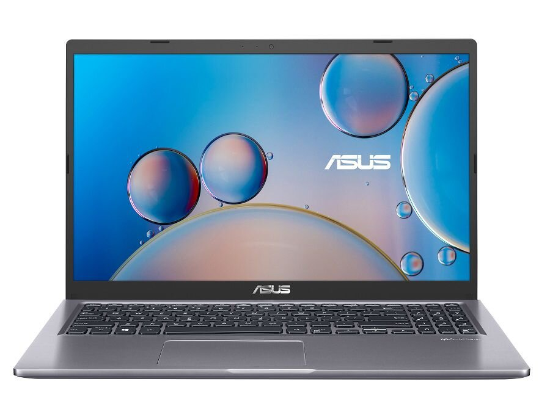
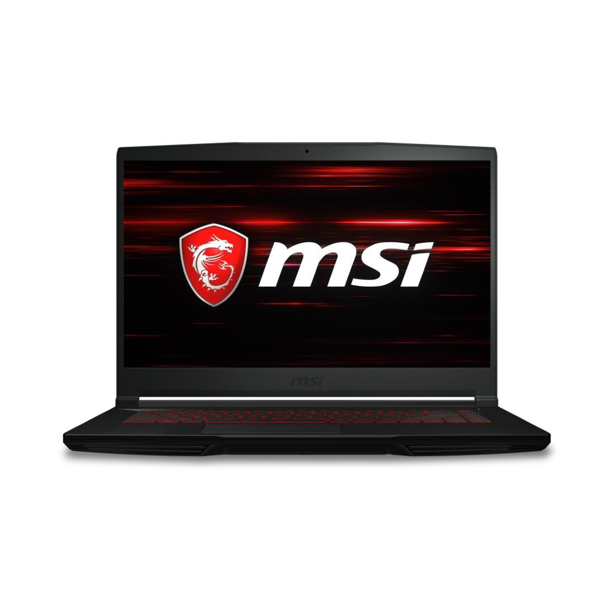
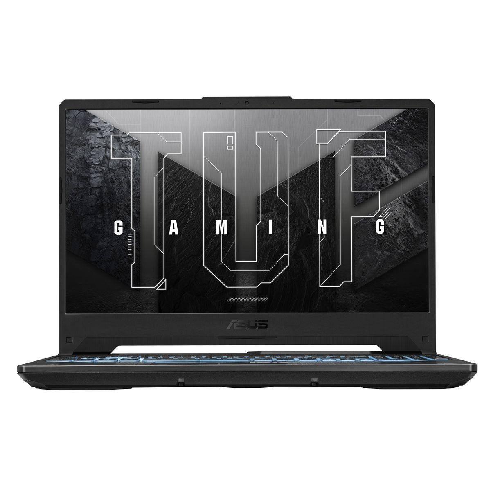

The Asus Notebook FX506HF is a high-performance gaming laptop featuring an Intel Core i5-11400H processor, 8GB of RAM, and a speedy 512GB SSD. What sets it apart is its dedicated NVIDIA RTX 2050 graphics card, ensuring exceptional gaming visuals and smooth gameplay. With a modern design, high-refresh-rate display, and efficient cooling, it's a great choice for gamers seeking immersive experiences.
The Acer Nitro 5 is a powerful gaming laptop equipped with an Intel Core i5-11400H processor, 8GB of RAM, and a fast 512GB SSD. It boasts a 15.6" display and features the NVIDIA GTX 1650 graphics card, delivering impressive gaming performance. With its sleek design and gaming-centric features, it's a fantastic choice for gamers looking for a competitive edge.
The MSI GF63 Thin is a high-performance gaming laptop featuring an Intel Core i7 processor, 16GB of RAM, and a spacious 1TB storage drive. It boasts a 15.6" Full HD display and is equipped with the NVIDIA GTX 1650 graphics card, delivering excellent gaming visuals. With its slim and portable design, it's a great choice for gamers who need both power and portability in one package.
The Asus FX507ZC4 is a powerful gaming notebook featuring an Intel Core i7-12700H processor, 8GB of RAM, and a fast 512GB SSD. It's equipped with the NVIDIA RTX 3050 graphics card, ensuring smooth and immersive gaming experiences. With a high-performance configuration and a dedicated graphics card, this laptop is designed for gamers who demand excellent gaming performance and responsiveness.
The Alienware X15 R2 is a high-end gaming laptop that boasts a powerful Intel Core i9-12900H processor, a whopping 32GB of RAM, and a lightning-fast 2TB RAID SSD storage solution. It's equipped with the NVIDIA RTX 3080 graphics card with 16GB of dedicated memory, ensuring top-tier gaming performance and excellent graphics rendering. The "Lunar" variant likely refers to a special design or color scheme, making this laptop not only a gaming powerhouse but also a stylish choice for gamers and tech enthusiasts..
The Lenovo IdeaPad 1 is a budget-friendly laptop powered by the AMD Ryzen 3 7320U processor. It comes with 4GB of RAM for basic multitasking and a fast 256GB SSD for storage. The laptop features a 15.6-inch Full HD (FHD) display, offering crisp visuals for various tasks like web browsing, productivity, and media consumption. While it may not be a gaming powerhouse, it's suitable for everyday computing needs, such as word processing, internet browsing, and streaming content.
R7000
Rating: 4.9

ASUS M515DA Laptop Ryzen 7 8GB 512GB SSD Notebook
The ASUS M515DA is a laptop powered by the AMD Ryzen 7 processor, offering strong performance for various computing tasks. It comes equipped with 8GB of RAM, providing ample memory for multitasking and running applications smoothly. Additionally, it features a speedy 512GB SSD (Solid State Drive) for fast data storage and quick boot times.
This laptop is suitable for a wide range of uses, including office work, web browsing, content consumption, and light to moderate productivity tasks. Its portable design makes it convenient for on-the-go use, and the combination of the Ryzen 7 processor and SSD ensures responsive performance.
The MSI Thin GF63 is a high-performance gaming laptop featuring an Intel Core i7-12650H processor, 16GB RAM, a 512GB SSD, and an NVIDIA RTX 4050 graphics card. Its 15.6" 144Hz display ensures smooth gaming visuals. Ideal for gaming and demanding tasks.
R22000
Rating: 4.4

MSI GF63 Thin i7 1650 8GB 15.6" FHD Gaming NB - Black
The MSI GF63 Thin is a gaming notebook equipped with an Intel Core i7 processor, 8GB of RAM, and a 15.6" FHD display. It comes in a sleek black design, making it a stylish choice for gaming and more.
R16000
Rating: 3.5

Asus TUF Gaming A15 Ryzen 5 8GB 512GB SSD RTX 3050 15.6" Gaming Notebook Black
The Asus TUF Gaming A15 is a powerful gaming notebook featuring a Ryzen 5 processor, 8GB of RAM, and a 512GB SSD. It's equipped with an RTX 3050 graphics card and boasts a 15.6" display. This gaming notebook comes in a stylish black design.